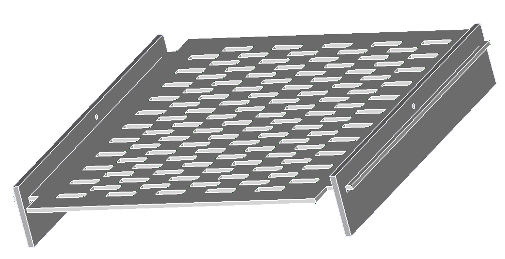
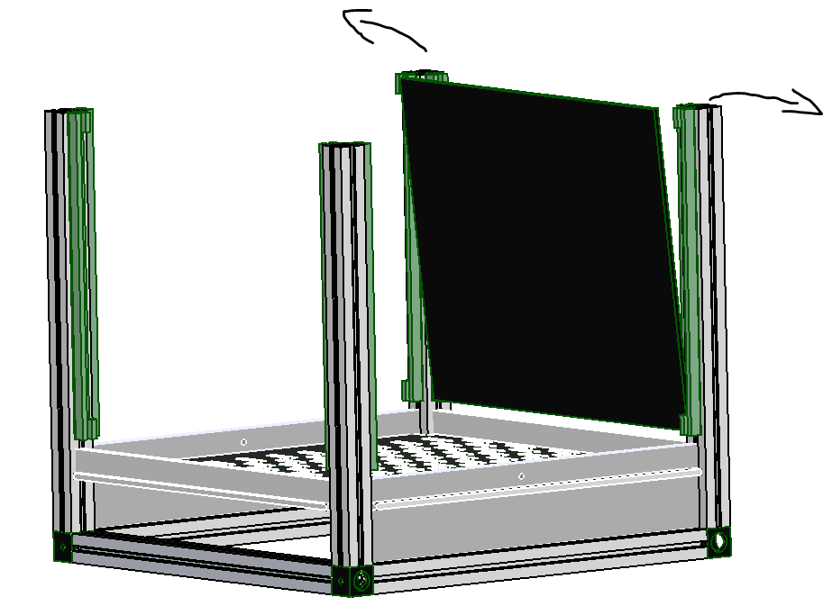
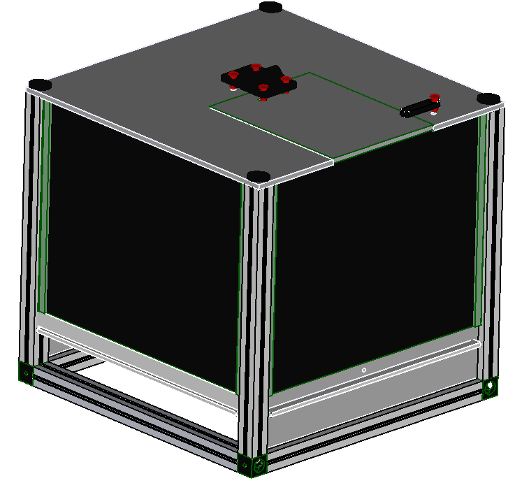

Building the box
Parts
Tools
Machines
Materials
- 1 clear plastic sheet
- 1 Liquid Adhesive
- 1 maker beam XL
- 80 g of PLA filament
you can skip step 1 and 2 if you bought the parts
Step 1: Printed parts
- To accomplish this section you will need a 3d printer and PLA filament to print
Step 2: Laser cut parts
- This section requires a Laser cutter and clear plastic sheet to produce the following parts:
- 1pc Lid and door
- 2pcs Feeding_panel
- 1pc base
- 2pcs Filler_panel
- 1pc Excretion_base
- 2pcs Excretion_side
- 2pcs Excretion_front
{kind=link}
{kind=link}
{kind=link}
{kind=link}
{kind=link}
{kind=link}
Step 3: Prepare the Makerbeam XL
- Cut 8 pcs 210mm long form the maker beam XL using the 150mm mini hacksaw.
- Assemble the the first M3 tap set from the taping set to the tap wrench.
- Tap the holes on the ends of the maker beam xl pieces that you had cut ealier.
Step 4: Assembly
- At this point you should have all the parts ready for assembly. Follow the steps to assemble the box:
-
Assemble 4 makerbeam xl and 4 3d printed corners to make a square frame. Using M3x8 socket cap screw fasten the corners to the maker beam xl uisng 2mm Hex key.

-
Fasten 4 more maker beam xl horizontally on to the sqaure frame made in (step 1) using M3x8 socket cap screw.
-
Slide the two Feeding_panel on to the opposite ends of the base as shown in the diagram.
{kind=link}
{kind=link}

-
Slide the assembly made in (step 3) on to the assembly made in (step2) as shown.
-
On the opposite sides of the assembly in (step 4), slide the Filler_panel.
-
Snap fit the screen sliders on the aseembly pillars.

-
Slide the 3/4 retina display on all the corners.Start by sliding in the base first at an angle as shown

-
Straigthen up the screen and slightly nudge the pillars side ways to allow the screen to stand upright.
{kind=link}

-
Reallign the pillars to fit the screen into the screen sliders slots.

-
Repeat (steps 6 to 8) to place all the screens. once all the screens are in place. The final assembly should look like the diagram below.

-
Place the Lid and door on a flat surface and allign the printed hing plus latch with their respective holes as shown.
-
Align the fastener pins in place with the hole and press fit them to fasten the lid and latch on to the lid.
{kind=link}

- Now the lid has all its aceesories, its time to attach it to the top of the box.
- Take M3x8 socket cap screw and using a Multi Angle Vice press the 3d printed thumbwheels on to the M3x8 socket cap screws..

- place the assembled lid on top of the box and fasten it with the assembled M3x8 socket cap screws.

- using Liquid Adhesive assemble the excretion panel and wait for it to dry.
- Once its dry slide it in to the space on the bottom of the box.

NB: The assembly is ready for use. The next steps will be to connet the electronics.